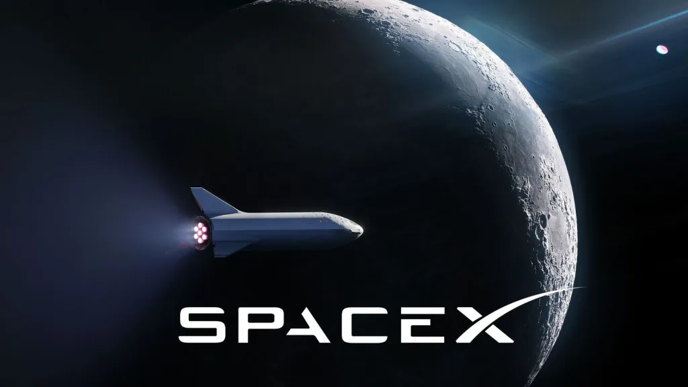
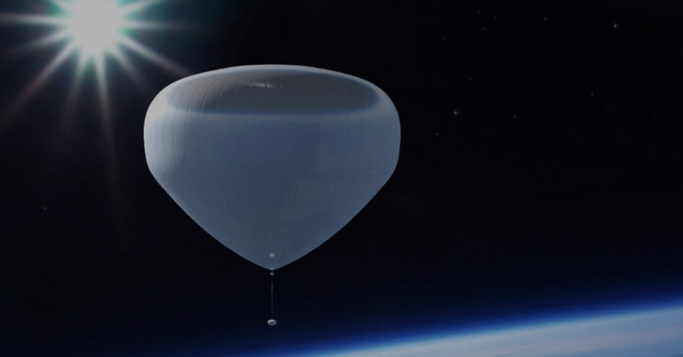

SpaceX
SpaceX is already hugely experienced when it comes to launching space-bound flights and the company is also hoping to get on board the space tourism bandwagon. However, unlike most other companies operating in this field, they are prioritising lunar tourism and other forms of space travel extending beyond Earth orbit.
Blue Origin

To date, Blue Origin has been the main competitor for Virgin Galactic in terms of sub-orbital space travel tourism. However, their offering is based around a more traditional rocket, known as the New Shepard, which takes off and lands vertically, and their objectives are to build towards orbital spaceflight.
Orion Span

Finally, Orion Span is a space travel company in the United States, which announced plans for a private commercial space station, called the Aurora Space Station. This would be placed in low Earth orbit and would effectively function as a space hotel, which would be able to host up to six space tourists at a time.
Zero 2 Infinity
Zero 2 Infinity, sometimes stylised as 0II∞, is an aerospace company based in Barcelona, Spain. Established in 2009, the company is notable for its climate-friendly approach and its launch systems utilise balloon technology in order to reduce the carbon emissions typically associated with space tourism.